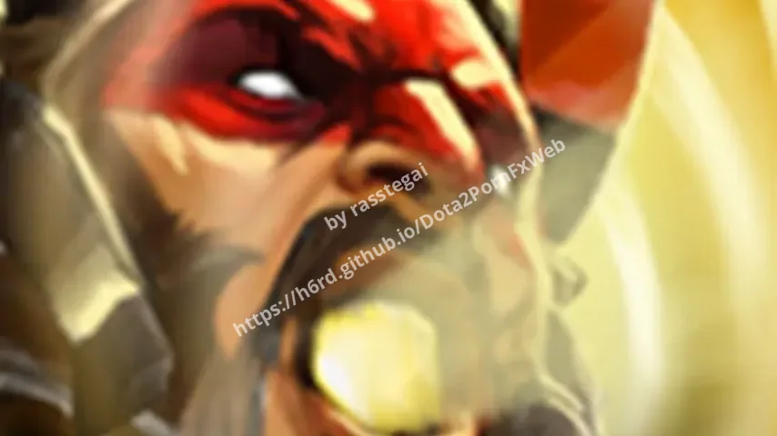

Dota 2 Music mods
Custom Music.
 TheFatRat Warrior
TheFatRat Warrior JJ Lin Timekeeper
JJ Lin Timekeeper deadmau5 dieback
deadmau5 dieback Elemental Fury
Elemental Fury Heroes Within
Heroes Within Humanity Last Breath
Humanity Last Breath Dire Shred
Dire Shred The International 2019
The International 2019 The International 2014
The International 2014 The International 2015
The International 2015 The International 2016
The International 2016 The International 2017
The International 2017 The International 10
The International 10 Northern Winds
Northern Winds Magic Sticks of Dynamite
Magic Sticks of Dynamite Terraria Music
Terraria Music Sewerslvt Music
Sewerslvt Music Rory in early 20s Music
Rory in early 20s Music
Broodskoe Win Lose Music Never
Win Lose Music Never Dark Carnival
Dark Carnival Terrorblade Arcana Music
Terrorblade Arcana Music